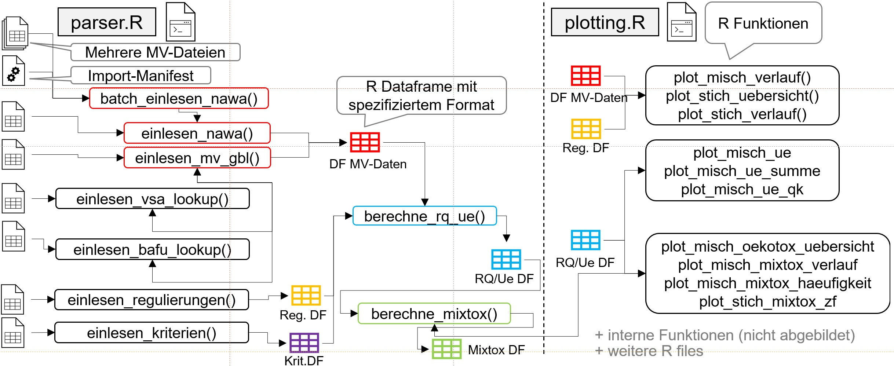

Übersicht
mvwizr soll die visuelle Auswertung von Mikroverunreinigungen (MV) in Schweizer Gewässern gemäss dem Modul-Stufen-Konzept erleichtern. Das Paket basiert auf einem Auftrag des Gewässer- und Bodenschutzlabor des Kantons Bern (GBL) an EBP Schweiz. Die Auswertungs- und Plotfunktionen sind aber bewusst so konzipiert, dass sie auch mit MV-Daten anderer Kantone funktionieren können.
Installation
mvwizr ist nicht auf CRAN veröffentlicht und kann daher am Einfachsten direkt von github installiert werden. Das Paket benötigt mindestens R 4.1. Alternativ kann das Paket z.B. auch auf Posit Cloud installiert und getestet werden. Für die Installation auf einem lokalen Rechner (Windows/macOS/Linux) folgende Kommandos ausführen:
install.packages("remotes")
remotes::install_github("ror-at-ebp/mvwizr", build = TRUE, build_vignettes = TRUE, dependencies = TRUE)Struktur des Pakets
Das Paket ist in verschiedene Verzeichnisse unterteilt:
-
R/: Enthält die R-Skripte, die die Funktionen des Pakets definieren. Die Funktionen sind in zwei Dateien unterteilt:parsing.Rfür Einlese- und Berechnungsfunktionen undplotting.Rfür Plotfunktionen (und noch Hilfsdateien wieutils-pipe.R). -
data/: Enthält die Beispieldaten, die mit dem Paket verteilt werden. Diese Daten sind in R-Objekten gespeichert und können direkt verwendet werden. Nicht manuell anpassen. -
data-raw/: Enthält die Skripte, die die Beispieldaten für das Paket erstellen. Die Beispieldaten sind im Verzeichnisdata/gespeichert. -
inst/extdata: Enthält zusätzliche Dateien, die mit dem Paket verteilt werden, z.B. die Kopien der MV-Dateien des GBL, die mit dem Paket eingelesen werden können. -
man/: Enthält die aus Roxygen-Tags automatisch erstellte Dokumentation des Pakets. Nicht manuell anpassen. -
tests/: Enthält die Tests für das Paket, die mit dem Pakettestthatgeschrieben werden. -
vignettes/: Enthält die Vignetten des Pakets, die die Verwendung des Pakets demonstrieren. Die Vignetten sind in RMarkdown geschrieben und können mitvignette("name-der-vignette")aufgerufen werden. -
AUTHORS.md: Enthält die Autoren des Pakets -
CHANGELOG.md: Kann Angaben zu Änderungen in den verschiedenen Versionen des Pakets enthalten. -
DESCRIPTION: Enthält die Metadaten des Pakets, wie Name, Version, Autoren, Abhängigkeiten, etc. -
LICENSE: Enthält die Lizenz des Pakets. -
mvwizr.Rproj: Das RStudio-Projekt des Pakets. -
NAMESPACE: Enthält die Definition der Funktionen, die exportiert werden sollen, und der Abhängigkeiten des Pakets. Nicht manuell anpassen. -
NEWS.md: Enthält Neuigkeiten zum Paket, die in den verschiedenen Versionen hinzugefügt wurden. -
README.md: Enthält die automatisch erstellte README-Datei des Pakets für Github. Nicht manuell anpassen. -
README.Rmd: Enthält die README-Datei des Pakets, die in eine README.md-Datei umgewandelt wird. -
scratchpad.R: Enthält Code-Schnipsel, die für das Austesten des Pakets nützlich sind (nicht in installierter Version des Pakets enthalten).
Die Funktionen im Paket hängen wie in der nachfolgenden Abbildung dargestellt zusammen (mit den jeweiligen Input-Dateien und Output-Objekten):

Verwendung
Das Paket stellt verschiedene Funktionen zum Umgang mit MV-Daten bereit vom Einlesen, über das Auswerten/Berechnen bis (hauptsächlich) zum Visualisieren. Viele Funktionen sind für Mischproben gedacht und unterstützen sowohl eine Auswertung für kurzzeitige Verunreinungen als auch für andauernde Verunreinigungen.
Hilfe erhalten
Das Paket enthält verschiedene eingebaute Möglichkeiten, Hilfe zu erhalten:
-
?funktion: Zeigt die Hilfe für eine bestimmte Funktion an, also z.B.?einlesen_mv_gbl. -
vignette("name-der-vignette"): Zeigt den Inhalt einer Vignette (Hilfedatei) an. Die Vignettedatei-spezifikationengibt z.B. Auskunft über die Formate der Dateien, die von den Einlesefunktionen erwartet werden. Die Vignettemvwizrgibt eine Übersicht über die Funktionen des Pakets anhand von Beispielgrafiken. -
??mvwizr: Zeigt die Hilfeseiten zu den gebundelten Beispieldaten an.
Daneben sind für die meisten Funktionen auch Beispiele in den Hilfeseiten enthalten, die die Verwendung der Funktionen demonstrieren.
Folgende Funktionen werden vom Paket exportiert und können direkt verwendet werden:
Einlesen
Alle Funktionen zum Einlesen und Berechnen sind in der Datei R/parsing.R enthalten.
-
einlesen_mv_gbl(): Liest die MV-Daten des GBL ein, normalisiert Einheiten, entfernt Duplikate, bestimmt Bestimmungsgrenzen aus Daten und verknüpft Daten mit der VSA Substanz_ID. Test-Daten werden mitgeliefert (siehe Beispiele im Hilfetext der Funktion). -
einlesen_bafu_lookup(): Liest die Lookup-TabelleBAFU_Liste_Parameter_Bezeichnungen_Datenaustausch.xlsxdes BAFU aus. Diese kann verwendet werden, um z.B. die französische Übersetzung einer Substanz zu erhalten. Eine Kopie der Datei wird mitgeliefert (siehe Beispiele im Hilfetext der Funktion). -
einlesen_kriterien(): Liest die Qualitätskriterien des VSA ein und entfernt Duplikate (Bevorzugung tieferer CQK und AQK für die Auswahl). Eine Kopie der Datei wird mitgeliefert (siehe Beispiele im Hilfetext der Funktion). -
einlesen_regulierungen(): Liest die MV-Regulierungen des VSA ein (diese Tabelle ist immer nur ein Auszug aus der VSA-Datenbank). Eine aktuelle Kopie der Datei wird mitgeliefert (siehe Beispiele im Hilfetext der Funktion). -
einlesen_vsa_lookup(): Liest die VSA-Lookup-Tabelle ein, die ein Bezug zwischen Parameter-ID des BAFU und der VSA Substanz_ID herstellt. Eine aktuelle Kopie der Datei wird mitgeliefert (siehe Beispiele im Hilfetext der Funktion).
Für alle obigen Funktionen werden mit dem Paket aktuelle Kopien der betreffenden Dateien verteilt. Es ist allerdings auch möglich, eigene Dateien zu verwenden, sofern diese der Formatspezifikation entsprechen (siehe vignette("datei-spezifikationen")). Auch werden bereits eingelesene Daten als Objekte im Paket zur Verfügung gestellt (siehe Vignette).
Berechnungen
-
berechne_rq_ue(): Berechnet Risikoquotienten und Überschreitungen für AQK und CQK. Output dient als Grundlage für diverse Plot-Funktionen -
berechne_mixtox(): Berechnet Mischungstoxizitäten aus dem Output vonberechne_rq_ue() -
einheiten_normalisieren(): Hilfsfunktion, um bei MV-Daten mit verschiedenen Einheiten (je nach Substanz) überall die gleiche Einheit zu verwenden (Standard: µg/l - wird durch Plotting-Funktionen erwartet).
Visualisierungen
Alle Funktionen zum Plotten sind in der Datei R/plotting.R enthalten.
-
plot_misch_verlauf(): Konzentrationsverläufe für Einzelsubstanzen, mehrere Substanzen und Summen (auch gruppiert) in verschiedenen Darstellungsarten. -
plot_misch_ue(): Verlauf von GSchV-Überschreitungen (entweder für kurzzeitige oder andauernde Belastungen) pro Substanz und für eine Station. -
plot_misch_ue_summe(): Verlauf von GSchV-Überschreitungen pro Jahr und Station mit Unterscheidung nach Überschreitung von numerischem Grenzwert (GSchV Anh. 2) oder allgemeinem Wert für org. Pestizide (0.1 µg/l). -
plot_misch_ue_qk(): Überschreitungen von QK (für Substanzen ohne spezifischen Anforderungswert in GSchV Anh. 2; entweder CQK oder AQK) im Verhältnis zu Überschreitungen der Substanzen, die in der GSchV aufgelistet sind. Mit Option für detaillierte Darstellung (mit einzelnen Substanzen) für den Vergleich verschiedener Stationen. -
plot_misch_oekotox_uebersicht(): Stationsübersicht Ökotoxbeurteilung (Einzelstoffe und Mischungstoxizität) pro Station und Jahr. Entweder für kurzzeitige oder andauernde Belastungen. -
plot_misch_mixtox_verlauf(): Zeitreihe der Mischungstoxizität für mehrere Stationen und Jahre gleichzeitig -
plot_misch_mixtox_haeufigkeit(): Zeitreihe der Häufigkeitsverteilung der Mischungstoxizität für eine Station (für kurzzeitige oder andauernde Belastungen) -
plot_stich_uebersicht(): Übersicht über Stichproben mittels Raster-Darstellung über die Zeit für eine Station. Die Konzentrationen werden dabei durch Farben in logarithmischer Skala dargestellt, wodurch schnell relevante Substanzen identifiziert werden können. -
plot_stich_verlauf(): Konzentrationsverlauf für Stichproben für mehrere Substanzen und Stationen. Gut geeignet für eine interaktive Analyse mit Plotly.
Die Rückgaben der Plot-Funktionen sind ggplot2- oder patchwork-Objekte, die weiter bearbeitet werden können, z.B.:
plot1 <- plot_misch_verlauf(mvdaten_beispiel_mvwizr, regulierungen_mvwizr, stationscode = "URT010", plot_typ = "barplot", id_substanz = 71,plot_bg = FALSE)
plot1 + ylim(0,0.02)Das Paket erweitern
Das Paket kann durch Hinzufügen neuer Funktionen und Daten erweitert werden. Hier sind einige Schritte, die befolgt werden müssen, um das Paket zu erweitern:
Neue Funktionen hinzufügen: Neue R-Skripte im
R-Verzeichnis erstellen (oder die Dateienparsing.Rundplotting.Rergänzen) und Funktionen dort definieren. Sicherstellen, dass die Funktionen mit Roxygen-Tag dokumentiert und exportiert werden, damit sie für Benutzer verfügbar sind. Falls die Funktionen Dataframes zurückliefern, sollte die Struktur dieser Dataframes ebenfalls definiert werden (z.B. in der Dokumentation der Beispieldaten im nächsten Schritt).Daten hinzufügen: Mittels Scripts im Verzeichnis
data-rawDatensätze erstellen und mit der Funktionusethis::use_data()die Daten im Paket abspeichern. Das Updaten dieser Daten muss manuell gemacht werden. Auch sollten die Daten dokumentiert werden (siehe bestehende Daten mit Dokumentation unter R/data.R).Dokumentation aktualisieren: Die Dokumentation des Pakets aktualisieren, einschliesslich der Vignetten und der Hilfeseiten für die neuen Funktionen und Daten.
roxygen2zur Generierung der Dokumentation verwenden (wird in RStudio automatisiert).Tests hinzufügen: Tests für die neuen Funktionen hinzufügen, um sicherzustellen, dass sie korrekt funktionieren. Das
testthat-Paket verwenden und Tests imtests/testthat-Verzeichnis speichern.Build und Check:
devtools::build()unddevtools::check()ausführen, um sicherzustellen, dass das Paket der R CMD CHECK ohne Fehler oder Warnungen besteht. Der R CMD CHECK wird auch automatisiert bei jedem Push auf denmain-Branch des GitHub-Repository ausgeführt. Dabei sollten keine Fehler und Warnungen auftreten.-
Styleguide: Der Code sollte dem Tidyverse Styleguide entsprechen. Dies kann mit dem Paket
stylerautomatisiert werden. Folgende Punkte für das Erstellen oder erweitern von Funktionen sollten ebenfalls beachtet werden:- Funktionen sollten möglichst kurz und einfach gehalten werden. Falls eine Funktion zu lang wird, sollte sie in mehrere kleinere Funktionen aufgeteilt werden.
- Rückgabewerte von Funktionen müssen typstabil sein, d.h. die Funktion sollte immer denselben Typ zurückgeben, unabhängig von den Eingabeparametern.
- Funktionen sollten möglichst keine Seiteneffekte haben, d.h. sie sollten keine globalen Variablen verändern oder auf Dateien schreiben. Wo dies nicht möglich ist (Funktionen zum Lessen und Schreiben, Funktionen, die direkt plotten, oder Funktionen, die auf globale Variablen angewiesen sind), sollte dies in der Dokumentation explizit erwähnt werden.
- Funktionsaufrufe sollten immer explizit mit der Angabe des Namespaces sein, d.h.
dplyr::filter()stattfilter(). Dadurch entstehen keine Konflikte (z.B. mitstats::filter()). Die Ausnahme davon sind gewisse Operatoren (z.B. Magrittr-Pipe%>%), die nicht explizit mit dem Namespace aufgerufen werden müssen, da Sie mit expliziten@importFrom-Direktiven in derNAMESPACE-Datei importiert werden (siehe Imports inutils-pipe.Rundmvwizr-package- automatisiert mit usethis). - Für das Programmieren mit tidyverse-Funktionen müssen aufgrund der non-standard-evaluation durch tidyverse einige spezielle Konventionen beachtet werden (z.B. die Verwendung der
.dataund.env-Pronomen in Funktionen, die data-masking verwenden). Diese speziellen Konventionen sind im Artikel Programming with dplyr beschrieben. Weitere fortgeschrittene Konzepte sind im eBook Advanced R von Hadley Wickham beschrieben.
Durch das Befolgen dieser Schritte kann das mvwizr-Paket erweitert und an spezifische Anforderungen angepasst werden. Dabei sollte stets die Dokumentation aktuell gehalten werden und die Versionierung angepasst werden (mit usethis::use_version()).